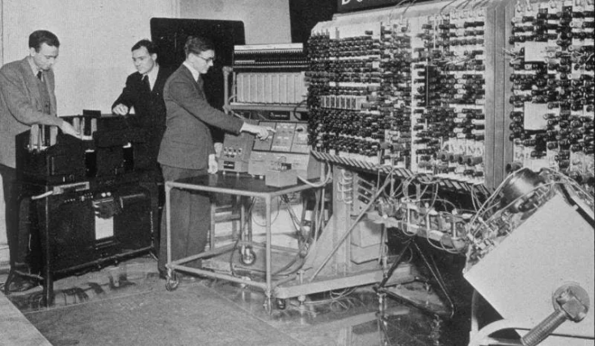

Neste ano, Alan Turing apresenta a noção de uma máquina universal (máquina de Turing), capaz de registrar qualquer coisa que seja computável.

1946
Graças ao sucesso de ENIAC, Mauchly e Presper receberam um financiamento do Census Bureau para construir o primeiro computador para aplicações comerciais e governamentais, intitulado UNIVAC.
1958
Jack Kilby e Robert Noyce criaram o primeiro chip (circuito integrado) de computador, possibilitando a diminuição do tamanho dos equipamentos eletrônicos, marcando a 3ª geração de computadores.